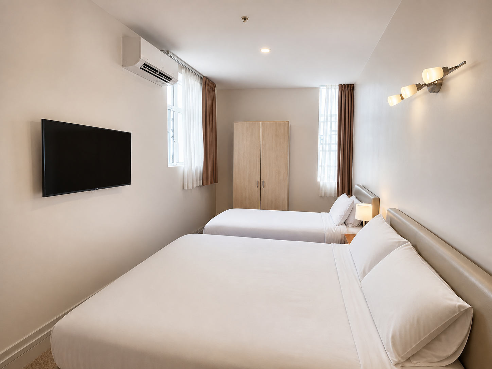
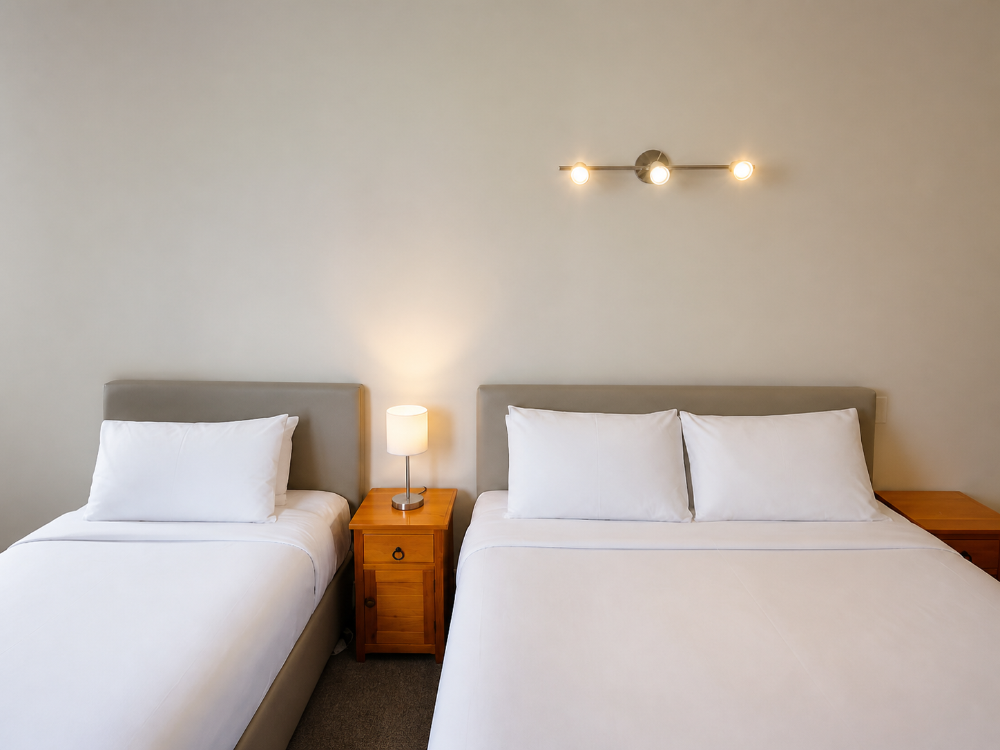
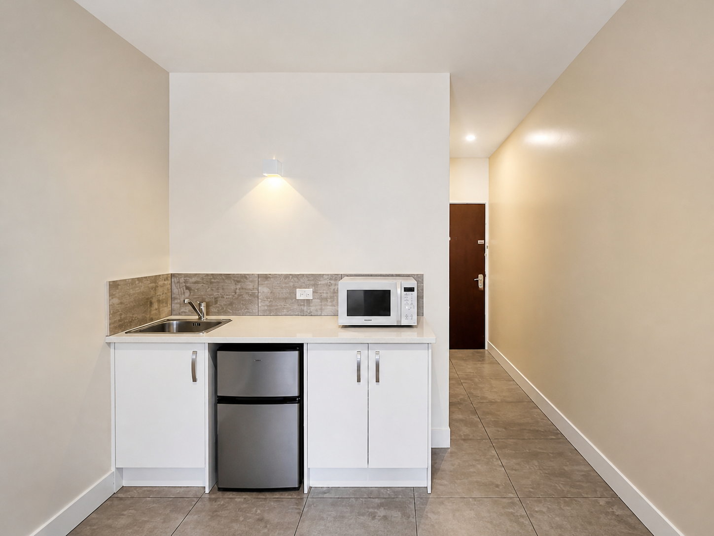
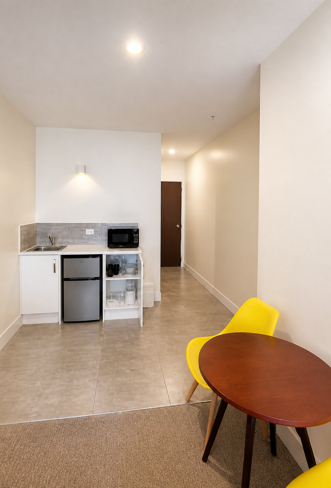
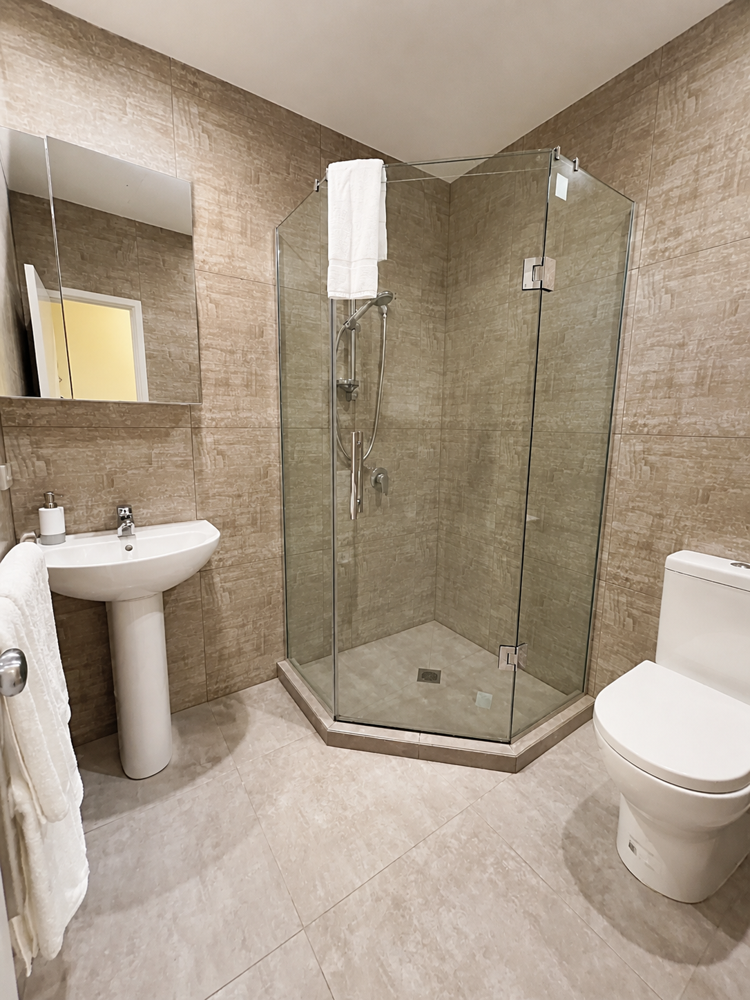
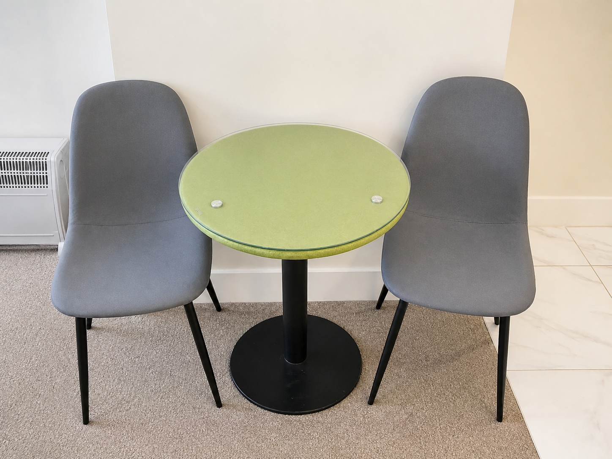
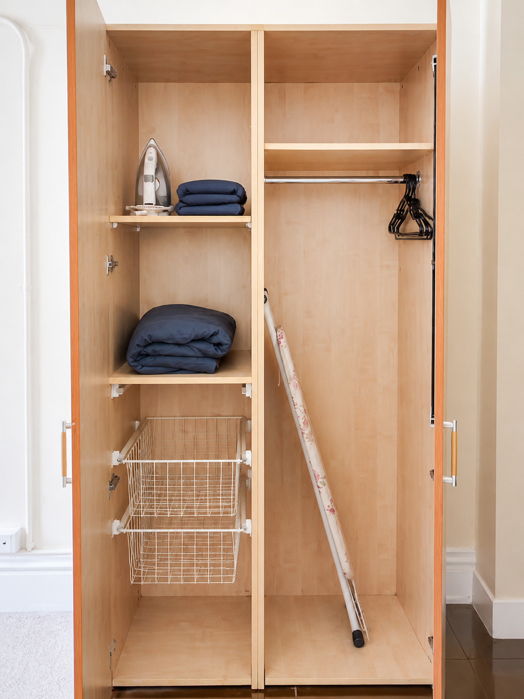

Private room · Maximum 3 guests
Deluxe Twin








A king bed and king single in one room, suited to friends who prefer separate beds or a small family staying together.
- Beds
- King + king single
- Guests
- 3
- View
- Varies by room
Room features
- King bed and king single
- Space for up to three guests
- Air conditioning
- Flat-screen television
- Fridge and kitchenette
- Private bathroom
- Free Wi-Fi
- Free toiletries
- Microwave and kettle
- Cutlery, dishes and utensils; no cookware
- Iron and ironing board
- Electric blanket available on request
Questions
Is this the family room?
It is the most flexible listed category for a small family, accommodating up to three guests.
Are the beds separate?
The room is listed with one king bed and one king single.
Ready to stay?
Check-in from 2 p.m. · Check-out by 10 a.m. View guest information, fees and check-in requirements.